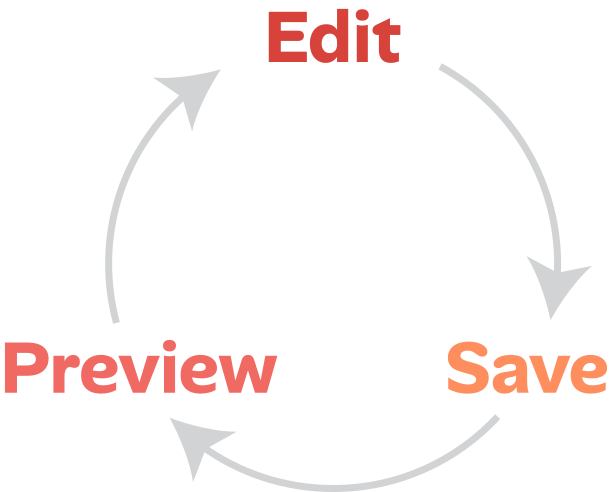
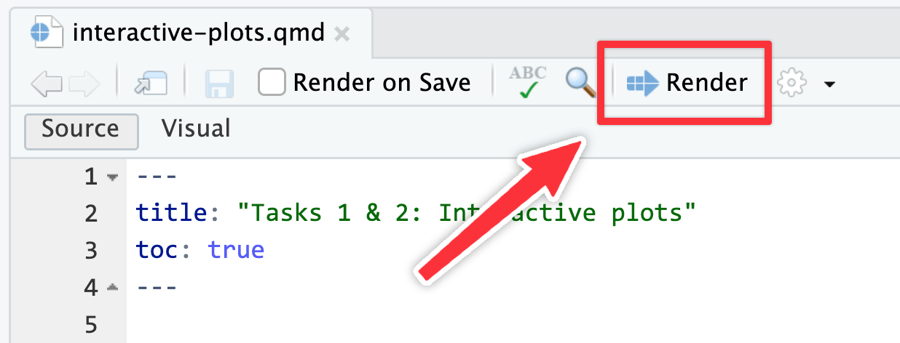
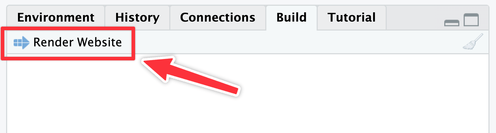
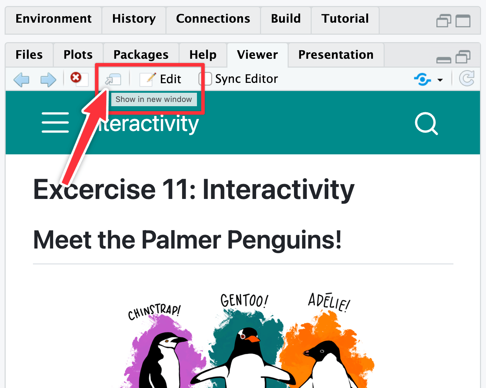

Instructions
Exercise 11 — PMAP 8551/4551, Spring 2026
This exercise is different from all your past work! That’s on purpose! Only HTML output can handle interactivity and dashboards—PDFs and Word files are static document formats that don’t allow Javascript.
Quarto websites
In this exercise, you’re going to create a whole Quarto website and publish it on the internet. That might sound intimidating and hard, but don’t worry! Thanks to Quarto, it should be fairly straightforward.
In addition to the regular single standalone Quarto documents you’ve been making all semester, Quarto can make websites.
I have a whole workshop website on making Quarto websites if you’re interested in making more official websites like a personal website or a website for a research project or event. Check out all the slides and materials there to learn more.
Quarto websites are collections of multiple .qmd files that you stitch together into one combined website. There are very few differences between what you’ve done so far this semester with single .qmd files and what you’ll do here with multiple .qmd files. You’ll type text and run R chunks in different .qmd files that I’ve given you.
The main new thing here is a file named _quarto.yml, which controls how the website is built and what pages show up in the navigation bar. I’ve given you a _quarto.yml file already—you only need to change your name and the date. It looks like this:
_quarto.yml
project:
type: website
subtitle: "Exercise 11 --- PMAP 8551/4551, Spring 2026"
author: "Tykeyah Pearson"
date: "2026-04-06"
date-format: "long"
site:
title: "Penguin Dashboard"
navbar:
right:
- text: "Dashboard"
href: dashboard.qmd
- text: "About"
href: about.qmdIt tells Quarto to (1) treat this whole project as a website, (2) use your name and a date and a subtitle, and (3) put a top navigation bar with a specific background color with links to a few different .qmd files. That’s it!
Each of those .qmd files are regular normal Quarto files.
Rendering and previewing Quarto website pages
DO NOT try to write everything in your Quarto files, render once at the end, and be done. With interactive plots—and especially with dashboards—it’s best to see what they look like in a web browser.
You should be rendering a lot. Follow this general workflow:
Even with your regular standalone Quarto files, you should be rendering a lot, checking the results to make sure (1) the document looks clean without extra warnings and messages, and (2) your images are sized the way you want them to be.

To preview the Quarto document you’re working on, render it like normal using the “Render” button at the top of the editor:

…or with keyboard shortcuts:
| macOS | Windows |
|---|---|
| ⌘⇧K | Ctrl + Shift + K |
To preview the whole site, use the “Render Website” button in the Build panel (or run quarto preview in the Terminal panel):

It’s probably easiest to not preview the page in Viewer panel in RStudio because it’s kind of small. Click on the arrow icon in the top corner of that panel to open the previewed page in your web browser:

Tasks 1 and 2: Interactive plots
You’ll do Task 1 (your check-in) and Task 2 (a recreation of an interactive plot) in the file named interactive-plots.qmd. Open that file in RStudio and follow the instructions there.
For Task 2 you will recreate an interactive plot (also accessible in the navigation bar at the top as “Tasks 1 and 2”).
Task 3: Dashboard
You’ll do Task 3 (making a basic dashboard) in the file named dashboard.qmd.
Quarto dashboards are incredibly powerful and flexible and you can make a lot of neat things with them! But it’s impossible to cover how to do everything. The best way to learn them is to play around with them and explore all the different features and options.
For this task you will recreate this dashboard (also accessible in the navigation bar at the top as “Task 3”).
You’ll need to skim through and explore the documentation for Quarto Dashboards here. In particular, these two sections will be helpful:
To make the value boxes:
- Refer to the Quarto dashboard documentation for Value Boxes.
- Find the names for different icons at Bootstrap Icons.
- The colors for the two value boxes are
#d1f0ff(light blue) and#ffe5db(light red).
Since the focus of that task is on making the structure of a dashboard and less about writing R code, I’ve given you the code for two of the dashboard elements here:
Task 4: Extension
Create a new .qmd file, make something in it, and add it to the navigation bar for your website. Do whatever you want here. This is just to give a chance to play with some other Quarto features (like, maybe try making an About Page).
If you’re super brave, check out Quarto Live or Observable JS for super advanced interactivity. Or just do something simple. Whatever you want! Learn something cool!
Publishing the site and submitting to iCollege
You will not upload a rendered PDF or Word file to iCollege. Instead, you’ll submit a link to your website.
Here’s how to do it:
Go to quartopub.com and create a free account. Make sure you’re logged in in your main browser.
In the Terminal panel in RStudio, run this:
Terminal
quarto publishSometimes RStudio might not have an open Terminal panel. If you don’t see the Terminal panel down by the console, go to View > Move Focus to Terminal and it’ll open a terminal for you.
Select
Quarto Puband press enter. Answer all the other questions. Press enter to select each different option.Wait for the site to render and upload. Here’s a little (soundless) video showing the whole process:
(Note! In that video I chose “Use another account” for the “Publish with account” option. You don’t have to do that! That was just so I could trigger the browser-based authentication window for the video. Ordinarily, once you set this up, you won’t have to authenticate again and you can just tell it to use your already-authenticated account.)
At the end of the process you’ll see the URL of your published site in the terminal, like this:
Terminal
... [✓] Preparing to publish site [✓] Uploading files (complete) [✓] Deploying published site [✓] Published site: https://andrewheiss.quarto.pub/my-super-cool-site-or-whateverCopy that URL and visit it in your browser. That’s your website!
You can view your Quarto Pub account page later to manage the site (like changing its URL or deleting the page, etc.)
In iCollege, paste the URL of your website into the submission form for Exercise 11.
You’re done!
If you make changes to your website later, you can update the live version by running quarto publish again. It’ll go a lot faster after the first time because you won’t have to answer all the different initial questions—it should just render and upload right away.